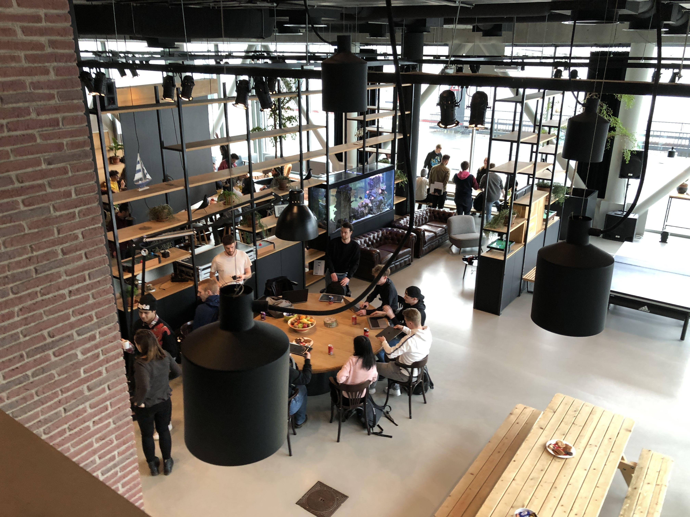
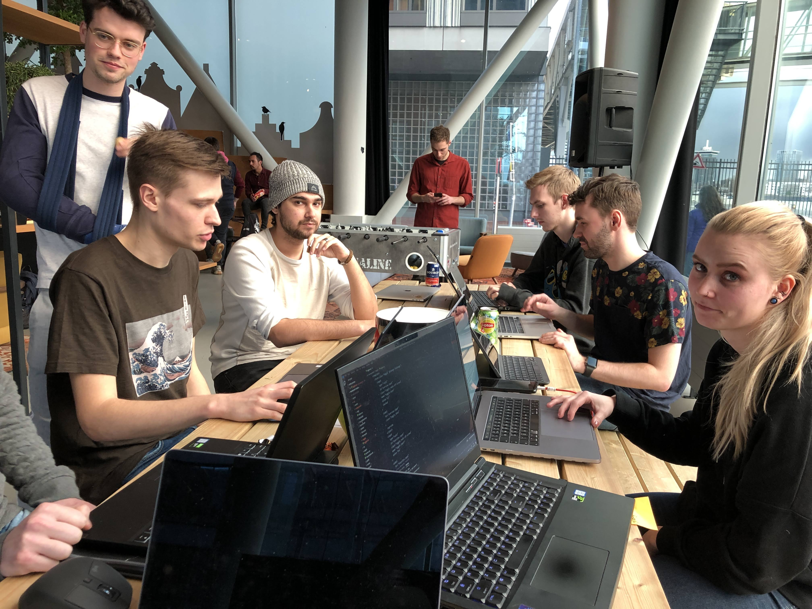
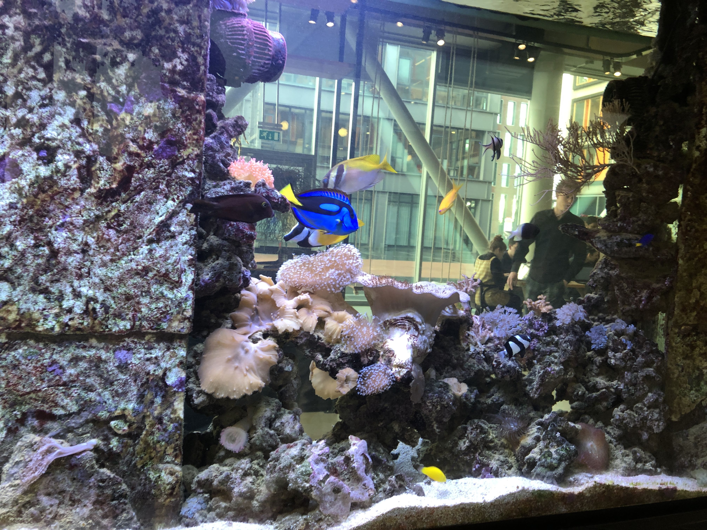

Funda
26-02-2020
Introductie
De tweede weekly nerd was op 26 februari. Voor de tweede weekly nerd gingen we op bezoek bij Funda. Hier werkt - oud-minor student - Lars. Lars gaf eerst een korte introductie over het bedrijf Funda. Zo had hij het erover dat Funda niet alleen funda.nl is, maar ook funda business, funda desk en dat ze een mobiele app hebben. Na de introductie van Lars gingen we met een workshop aan de slag.
Workshop
De workshop bestond uit het maken van bepaalde features voor de Funda website in een sandbox environment. Hiervoor werden teams gemaakt. Ieder team ging aan een bepaalde feature werken. Mijn team was verantwoordelijk voor het bouwen van de feature 'save house', die dient voor het opslaan van bepaalde huizen. Het was de bedoeling dat aan het einde van de workshop de features werden samengevoegd. Echter verliep dit niet al te soepel, omdat er niet mega veel tijd was voor de workshop en deze in bepaalde talen geschreven was die niet bekend was bij iedereen.
Mijn ervaring
Toen we gingen beginnen met de workshop, kreeg ik een error als ik de Funda sandbox environment wilde openen. Samen met Lars hebben wij voor een goed uur en een kwartier geprobeerd dit te verhelpen, echter zonder resultaat. Uiteindelijk ben ik met mijn team mee gaan kijken, omdat ik zelf niets kon doen.

De error
Het leek dat deze error veroorzaakt werd door mijn Node. Ik had al een keer eerder problemen gehad met Node. Dit was een half jaar geleden tijdens mijn stage. Daar werkte we met Angular en iedere keer als ik Angular installeerde, werkte het prima met commands. Totdat ik mijn code editor sloot en weer opnieuw opende, dan herkende hij de commands / Angular niet meer. Dit zelfde probleem kreeg ik toen we aan de slag gingen met npm packages tijdens de module Progressive Web Apps. Hierdoor besloot ik om dit voor eens en altijd uit te zoeken en te verhelpen.
Oplossing
Het leek dat deze error veroorzaakt werd door mijn Node. Ik had al een keer eerder problemen gehad met Node. Dit was een half jaar geleden tijdens mijn stage. Daar werkte we met Angular en iedere keer als ik Angular installeerde, werkte het prima met commands. Totdat ik mijn code editor sloot en weer opnieuw opende, dan herkende hij de commands / Angular niet meer. Dit zelfde probleem kreeg ik toen we aan de slag gingen met npm packages tijdens de module Progressive Web Apps. Hierdoor besloot ik om dit voor eens en altijd uit te zoeken en te verhelpen.
- 1. Open een terminal shell
- 2. Ga naar de home folder
cd ~/ - 3. Vul in
touch .bash_profileom een bash_profile aan te maken. - Vul
open -e .bash_profilein om het bestand te wijzigen. - Voeg het juiste path toe (kan afwijken)
PATH=$PATH:/Users/USERNAME/.npm-global/bin/
Sindsdien werkt alles prima.
